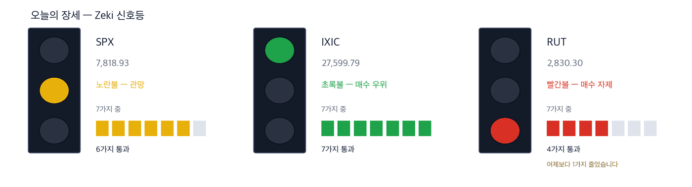

다우 51,521 +0.49% | 나스닥 종합 27,600 +0.45% | S&P 500 7,819 +0.58% | 러셀 2000 2,830 -0.59% | 10년 국채 5.27% | 제키 신호등 노란불 |

초록불은 매수 우위, 노란불은 관망, 빨간불은 매수 자제입니다. 칸은 7가지 조건 중 몇 가지를 만족하는지이고, 많을수록 오르는 종목이 넓게 퍼져 있습니다. 10월 6일 종가로 계산했습니다. 나스닥 종합은 7가지를 모두 만족해 초록불입니다. S&P 500은 6가지로 노란불입니다. 러셀 2000은 4가지로 10월 5일보다 1가지 줄어 빨간불이 됐습니다. 세 지수를 합한 신호등은 노란불입니다.
관망 — 신호등이 뜻하는 자세입니다.
10월 6일 뉴욕에서 S&P 500이 0.58% 올라 7,818.93으로 마쳤습니다. 사상 최고 종가입니다. 나스닥 종합도 0.45% 올라 최고치를 다시 썼고, 다우는 0.49% 올랐습니다. (IBD)
지수를 끈 것은 인공지능 관련주였습니다. 대부분의 종목은 내렸고, 소형주 지수 러셀 2000은 0.59% 내렸습니다. 오르는 힘이 몇몇 업종에 몰려 있다는 뜻입니다. (월스트리트저널·IBD)
구글과 컨스텔레이션 에너지는 20년짜리 원전 전력 계약을 맺었습니다. 원자로를 새로 짓지 않고 기존 원자로 11기의 출력을 늘리는 방식입니다. 컨스텔레이션 주가는 하루 12.25% 올랐습니다. (월스트리트저널·IBD)
반대로 바이오 상장지수펀드(XBI)는 3.39% 내렸습니다. 장중에 오르다 꺾인 바이오·진단 종목이 많았습니다. (IBD)
① 14:00 ET 연준 의사록 뒤 10년물 금리를 보십시오. 6일에는 5.27%로 조금 내렸습니다. 하루 전에는 24년 만의 최고치였습니다. 의사록이 한 번 더 인상을 가리키면 금리가 다시 오르고, 신고가 근처의 기술주가 먼저 흔들립니다. (IBD·월스트리트저널)
② 전력망 공사 회사 퀀타 서비스가 5.29% 올랐습니다. 원전 계약 소식에 전력 설비 회사로 돈이 몰렸습니다. 50일 평균을 되찾은 뒤 추세선까지 넘었습니다. (IBD)
③ 아스테라 랩스가 7.58% 올라 근거가 가장 무겁습니다. 서버 안의 칩을 잇는 부품 회사입니다. 다만 하루에 크게 오른 뒤라, 개장 뒤 10월 6일 종가를 지키는지가 첫 확인입니다. (IBD)
숫자 하나 — 미국의 8월 무역적자 약 1,060억 달러입니다. 1년여 만에 가장 큽니다. 원유와 금, 반도체를 더 많이 사들였습니다. (월스트리트저널)
| 날짜 | 무엇을 보는가 | 시장에 어떤 영향 |
|---|---|---|
| 10월 7일(수) 14:00 ET | 미국 FOMC 의사록 (9월 15~16일 회의) | 위원들이 금리를 더 올리려 했는지가 드러나 국채금리가 먼저 움직입니다 |
| 10월 9일(금) 개장 전 | 델타항공 3분기 실적 | 실적 시즌의 첫 대형 발표입니다. 연료비를 얼마나 운임에 넘겼는지가 드러납니다 |
| 10월 14일(수) 08:30 ET | 미국 소비자물가 (9월분) | 물가가 높게 나오면 미국 10년물 국채금리가 오르기 쉽고, 성장주가 먼저 흔들립니다 |
이 계약은 원전 회사와 기술 회사가 맺은 계약 가운데, 기존 원자로의 출력을 늘리는 방식으로는 가장 큽니다. 데이터센터가 쓸 전기를 미리 묶어 두려는 계약입니다. (월스트리트저널)
계약 소식에 발전과 전력 설비 쪽이 함께 올랐습니다. 퀀타 서비스와 블룸 에너지 같은 인공지능 전력 관련주에서 매수 신호가 나왔습니다. (IBD)
| 종가 | 당일 | 한 주 | 20거래일 |
|---|---|---|---|
| 719.56달러 | +5.29% | +10.40% | +12.60% |
| 3개월 | 제키 강도 | 제키 자금 | 고점 대비 |
|---|---|---|---|
| +7.99% | 84 | A | -8.8% |
| 누가 | 퀀타 서비스, 송전망과 변전소를 짓는 전력망 공사 회사입니다. |
| 무엇을 | 10월 6일 5.29% 올라 719.56달러에 마쳤습니다. 한 주 동안 10.40% 올랐습니다. |
| 언제 | 10월 6일 종가 기준입니다. |
| 어디서 | 뉴욕증권거래소 상장 종목입니다. |
| 왜 | 데이터센터가 전기를 더 끌어 쓰려면 송전선과 변전소부터 늘려야 하기 때문입니다. |
| 어떻게 | 며칠 전 50일 평균을 되찾은 뒤 추세선을 넘었습니다. 거래량은 50일 평균의 1.08배였습니다. |
판단 — 4가지 가운데 3가지를 넘었습니다. 다만 제키 강도가 84로 기준(90)에 못 미칩니다. 3개월과 2주 제키 자금은 모두 A입니다.
확인 신호 — 10월 6일 고가 722.21달러를 넘어 마감하는 것입니다.
철회 기준 — 50일 평균 646.18달러 아래로 다시 마감하는 것입니다.
| 종가 | 당일 | 한 주 | 20거래일 |
|---|---|---|---|
| 295.78달러 | +3.19% | +1.56% | +6.70% |
| 3개월 | 제키 강도 | 제키 자금 | 고점 대비 |
|---|---|---|---|
| +16.32% | 96 | C | -15.8% |
| 누가 | 블룸 에너지, 건물 옆에서 바로 전기를 만드는 연료전지 회사입니다. |
| 무엇을 | 10월 6일 3.19% 올라 295.78달러에 마쳤습니다. 1년 최고가보다 15.8% 아래입니다. |
| 언제 | 10월 6일 종가 기준입니다. |
| 어디서 | 뉴욕증권거래소 상장 종목입니다. |
| 왜 | 송전망 공사를 기다리지 않고 데이터센터 옆에서 전기를 바로 댈 수 있기 때문입니다. |
| 어떻게 | 매수 기준선을 넘은 뒤 5% 안쪽 구간에서 올랐습니다. 거래량은 50일 평균의 0.76배로 적었습니다. |
판단 — 4가지 가운데 3가지를 넘었습니다. 제키 강도 96, 20거래일 동안 6.7% 올랐습니다. 다만 3개월 제키 자금이 C로 기준(A·B)에 못 미칩니다. 2주 자금은 B로 나아졌습니다.
확인 신호 — 최근 6거래일 고가 302.35달러를 넘어 마감하는 것입니다.
철회 기준 — 21일 지수 이동평균 271.19달러 아래로 마감하는 것입니다.
| 종가 | 당일 | 한 주 | 20거래일 |
|---|---|---|---|
| 384.09달러 | +1.86% | +5.21% | +6.64% |
| 3개월 | 제키 강도 | 제키 자금 | 고점 대비 |
|---|---|---|---|
| +21.49% | 87 | A | -1.2% |
| 누가 | 웨스코 인터내셔널, 전기 설비와 통신 부품을 공사 현장에 대 주는 유통 회사입니다. |
| 무엇을 | 10월 6일 1.86% 올라 384.09달러에 마쳤습니다. 장중 매수 기준선 385.37달러를 넘었다가 그 아래에서 마감했습니다. |
| 언제 | 10월 6일 종가 기준입니다. |
| 어디서 | 뉴욕증권거래소 상장 종목입니다. |
| 왜 | 데이터센터와 전력망 공사가 늘면 케이블과 배전반 주문이 이 회사를 거치기 때문입니다. |
| 어떻게 | 거래량은 50일 평균의 0.97배로 평균에 못 미쳤습니다. 올해 이익은 30% 늘 것으로 예상됩니다. |
판단 — 4가지 가운데 2가지를 넘었습니다. 제키 강도가 87로 기준에 못 미치고, 2주 제키 자금이 B로 3개월(A)보다 약해졌습니다.
확인 신호 — 거래량이 50일 평균을 넘으며 385.37달러 위에서 마감하는 것입니다.
철회 기준 — 21일 지수 이동평균 362.01달러 아래로 마감하는 것입니다.
엔비디아가 투자한 클라우드 회사 람다는 상장 전 마지막으로 최대 40억 달러를 모으고 있습니다. 소프트뱅크가 투자한 데이터센터 회사 데이원도 연말까지 나스닥 상장으로 최대 50억 달러를 모으려 합니다. 데이터센터에 들어가는 돈은 아직 줄지 않았습니다. (월스트리트저널)
그 안에서도 매수세가 우세했던 쪽은 데이터센터 안의 칩과 서버를 잇는 장비였습니다. 아리스타 네트웍스는 장중 사상 최고가를 썼고, 앰페놀은 매수 기준선을 넘었습니다. (IBD)
| 종가 | 당일 | 한 주 | 20거래일 |
|---|---|---|---|
| 389.80달러 | +7.58% | +8.93% | +34.95% |
| 3개월 | 제키 강도 | 제키 자금 | 고점 대비 |
|---|---|---|---|
| -0.85% | 95 | B | -22.0% |
| 누가 | 아스테라 랩스, 서버 안에서 칩 사이의 데이터 전송을 맡는 연결 칩을 만드는 회사입니다. |
| 무엇을 | 10월 6일 7.58% 올라 389.80달러에 마쳤습니다. 20거래일 동안 34.95% 올랐습니다. |
| 언제 | 10월 6일 종가 기준입니다. |
| 어디서 | 나스닥 상장 종목입니다. |
| 왜 | 서버에 그래픽 칩이 늘수록 칩 사이를 잇는 부품도 함께 늘기 때문입니다. |
| 어떻게 | 전날 고가보다 높게 시작해 이른 매수 기준선 위로 올라섰습니다. 거래량은 50일 평균의 1.57배였습니다. 1년 최고가보다는 22.0% 아래입니다. |
판단 — 4가지를 모두 넘었습니다. 제키 강도 95, 3개월 제키 자금은 B, 2주 자금은 A입니다. 다만 하루에 크게 오른 뒤입니다.
확인 신호 — 최근 6거래일 고가 401.74달러를 넘어 마감하는 것입니다.
철회 기준 — 10월 6일 종가에서 8% 내린 358.62달러 아래로 마감하는 것입니다.
| 종가 | 당일 | 한 주 | 20거래일 |
|---|---|---|---|
| 215.36달러 | +4.09% | +6.16% | +10.46% |
| 3개월 | 제키 강도 | 제키 자금 | 고점 대비 |
|---|---|---|---|
| +18.95% | 87 | A | -0.3% |
| 누가 | 아리스타 네트웍스, 데이터센터용 고속 네트워크 스위치를 만드는 회사입니다. |
| 무엇을 | 10월 6일 4.09% 올라 215.36달러에 마쳤습니다. 매수 기준선을 넘었습니다. |
| 언제 | 10월 6일 종가 기준입니다. |
| 어디서 | 뉴욕증권거래소 상장 종목입니다. |
| 왜 | 인공지능 서버 수천 대를 하나로 묶으려면 빠른 스위치가 필요하기 때문입니다. |
| 어떻게 | 장중 사상 최고가 216.07달러를 썼습니다. 거래량은 50일 평균의 1.14배였습니다. |
판단 — 4가지 가운데 3가지를 넘었습니다. 다만 제키 강도가 87로 기준(90)에 못 미칩니다. 3개월과 2주 제키 자금은 모두 A입니다.
확인 신호 — 사상 최고가 216.07달러를 넘어 마감하는 것입니다.
철회 기준 — 21일 지수 이동평균 202.47달러 아래로 마감하는 것입니다.
| 종가 | 당일 | 한 주 | 20거래일 |
|---|---|---|---|
| 88.62달러 | +1.55% | +5.07% | +8.39% |
| 3개월 | 제키 강도 | 제키 자금 | 고점 대비 |
|---|---|---|---|
| +12.02% | 79 | B | -1.5% |
| 누가 | 앰페놀, 데이터센터에 들어가는 케이블과 연결 부품을 만드는 회사입니다. |
| 무엇을 | 10월 6일 1.55% 올라 88.62달러에 마쳤습니다. 매수 기준선 88.17달러를 넘었습니다. |
| 언제 | 10월 6일 종가 기준입니다. |
| 어디서 | 뉴욕증권거래소 상장 종목입니다. |
| 왜 | 서버와 스위치가 늘어날수록 그 사이를 잇는 케이블과 연결 부품도 늘기 때문입니다. |
| 어떻게 | 올해 이익이 60% 늘 것으로 예상됩니다. 거래량은 50일 평균의 0.74배로 적었습니다. |
판단 — 4가지 가운데 3가지를 넘었습니다. 다만 제키 강도가 79로 기준에 못 미칩니다. 3개월 제키 자금은 B, 2주 자금은 A입니다.
확인 신호 — 1년 최고가 89.93달러를 넘어 마감하는 것입니다.
철회 기준 — 매수 기준선 88.17달러 아래로 다시 마감하는 것입니다.
6일 모더나가 7.75%, 템퍼스 AI가 13.85%, 가던트 헬스가 8.83% 내렸습니다. (IBD) 가던트 헬스는 10월 6일 다이제스트에 실린 종목입니다. 바이오 상장지수펀드는 21일 평균과 50일 평균 아래로 내려갔습니다. IBD는 이를 한 업종에 몰아 사지 말라는 경고로 읽었습니다. 오늘은 이 테마에서 종목을 고르지 않습니다.
같은 이유로 뺀 것 하나 더 — 컨스텔레이션 에너지입니다. 구글과의 계약 소식에 하루 12.25% 올랐지만 추세 지표(25일과 50일 평균의 차이)는 아직 0 아래입니다. 제키 강도는 53이고, 1년 최고가보다 27.2% 아래입니다. 오늘 기사의 주인공이지만 종목으로 다루지 않습니다.
| 종목 | ①20거래일 상승 | ②강도 90↑ | ③자금 3개월 A~B | ④2주째 유지 | 충족 | 근거의 무게 |
|---|---|---|---|---|---|---|
| 퀀타 서비스(PWR) | O | X | O | O | 3/4 | 확인 필요 |
| 블룸 에너지(BE) | O | O | X | O | 3/4 | 근거 있음 |
| 웨스코 인터내셔널(WCC) | O | X | O | X | 2/4 | 확인 필요 |
| 아스테라 랩스(ALAB) | O | O | O | O | 4/4 | 근거 확실 |
| 아리스타 네트웍스(ANET) | O | X | O | O | 3/4 | 확인 필요 |
| 앰페놀(APH) | O | X | O | O | 3/4 | 확인 필요 |
네 칸은 ①20거래일 동안 올랐는가 ②제키 강도가 90 이상인가입니다. 이어서 ③3개월 제키 자금이 A 또는 B인가 ④최근 2주에 자금이 약해지지 않았는가입니다. O의 개수가 근거의 무게를 정합니다. 오늘 6종목 가운데 ②를 넘은 곳은 2곳, ③을 넘은 곳은 5곳입니다.
미국에는 외국인·기관이 몇 주를 샀는지 알려 주는 일별 공시가 없습니다. 아래 등급은 오른 날과 내린 날의 거래량을 견줘 되짚은 추정이지 집계가 아닙니다. 10월 6일 종가까지의 자료입니다.
| 종목 | 수급 3개월→2주 | 거래량 | 어떻게 읽나 |
|---|---|---|---|
| 매집 5 — 3개월 A, 2주도 사는 쪽 | |||
| Mattel Inc MAT | A → A = | 4.64배 | 관심✗ — 3개월도 2주도 사는 쪽입니다 |
| Lamb Weston Holdings LW | A → A = | 2.86배 | 관심✗ — 3개월도 2주도 사는 쪽입니다 |
| Vistra Corp VST | A → A = | 2.43배 | 관심✗ — 3개월도 2주도 사는 쪽입니다 |
| Accenture plc ACN | A → B ↓ | 2.20배 | 주의 — 등급이 내리는데 물량이 늘었습니다 |
| Eton Pharmaceuticals ETON | A → B ↓ | 1.66배 | 주의 — 등급이 내리는데 물량이 늘었습니다 |
| 분산 5 — 3개월 E, 2주도 파는 쪽 | |||
| Fair Isaac FICO | E → D ↑ | 3.87배 | 주의 — 3개월도 2주도 파는 쪽이고 물량이 늘었습니다 |
| Nike Inc NKE | E → E = | 2.94배 | 주의 — 3개월도 2주도 파는 쪽이고 물량이 늘었습니다 |
| Annaly Capital Management NLY | E → E = | 2.26배 | 주의 — 3개월도 2주도 파는 쪽이고 물량이 늘었습니다 |
| C.H. Robinson Worldwide CHRW | E → E = | 1.91배 | 주의 — 3개월도 2주도 파는 쪽이고 물량이 늘었습니다 |
| Weyerhaeuser Company WY | E → E = | 1.84배 | 주의 — 3개월도 2주도 파는 쪽이고 물량이 늘었습니다 |
거래량은 최근 5거래일 평균 ÷ 50일 평균입니다. 줄마다 거래량이 많은 순서이며, 10월 6일 다이제스트에 실린 종목은 빼고 다음 순서로 채웠습니다. ✓ 는 저희 진입 규칙(추세 지표가 0 위)도 통과했다는 뜻이고, ✗ 는 수급은 좋지만 규칙 밖이라는 뜻입니다. 이 읽는 법이 맞는지는 지금 세고 있습니다.
수급 등급은 다음 날 사라는 신호가 아닙니다. 저희가 미국 21년치로 재어 보니 등급별 그 뒤 성적이 서로 구별되지 않았습니다. 이 표는 지금 무슨 일이 벌어지는지를 보여 줄 뿐입니다.
기사와 값이 맞아도 자금은 따로 봅니다. 아래 표는 최근 5거래일 거래량이 50일 평균을 넘었는지를 답합니다.
| 종목 | 50일 평균을 넘었나 | 제키 자금 3개월 → 2주 | 어떻게 읽나 |
|---|---|---|---|
| 퀀타 서비스(PWR) | 0.92배 ✗ 못 넘었습니다 | A → A | 관심 — 3개월도 2주도 사는 쪽입니다 |
| 블룸 에너지(BE) | 0.73배 ✗ 못 넘었습니다 | C → B | 확인 — 올랐지만 거래가 얕습니다 |
| 웨스코 인터내셔널(WCC) | 0.91배 ✗ 못 넘었습니다 | A → B | 관망 — 내리지만 거래가 말랐습니다 |
| 아스테라 랩스(ALAB) | 1.03배 ✓ 넘었습니다 | B → A | 확인 — 올랐지만 거래가 얕습니다 |
| 아리스타 네트웍스(ANET) | 0.77배 ✗ 못 넘었습니다 | A → A | 관망 — 이어지지만 거래가 말랐습니다 |
| 앰페놀(APH) | 0.91배 ✗ 못 넘었습니다 | B → A | 확인 — 올랐지만 거래가 얕습니다 |
칸의 말은 저희의 매매를 뜻하지 않습니다. 관심은 값과 거래가 같은 쪽이라는 뜻입니다. 확인은 등급은 올랐지만 거래가 얕다는 뜻이고, 관망은 흐름은 이어지지만 거래가 말랐다는 뜻입니다.
| 근거의 무게 | 종목 | S&P 500을 이긴 수 | 지수를 웃돈 폭 | 지수를 밑돈 폭 | 전부 평균 |
|---|---|---|---|---|---|
| 근거 확실 | 40 | 26 / 40 | +4.46%p | -3.80%p | +1.57%p |
| 근거 있음 | 17 | 8 / 17 | +2.99%p | -3.67%p | -0.54%p |
| 확인 필요 | 19 | 7 / 19 | +3.56%p | -2.87%p | -0.50%p |
| 근거 없음 | 4 | 0 / 4 | 없음 | -2.42%p | -2.42%p |
| 테마 제외 | 7 | 0 / 7 | 없음 | -3.51%p | -3.51%p |
| 근거 확실 40 | +1.57%p | ||||||
| 근거 있음 17 | −0.54%p | ||||||
| 확인 필요 19 | −0.50%p | ||||||
| 근거 없음 4 | −2.42%p | ||||||
| 테마 제외 7 | −3.51%p |
가운데 선이 S&P 500입니다. 오른쪽이 웃돈 것, 왼쪽이 밑돈 것입니다. 이름 옆 회색 숫자는 그 칸의 종목 수입니다.
근거 확실 40종목 가운데 26종목이 S&P 500을 이겼습니다. 이긴 26종목은 평균 4.5%p 웃돌았고, 진 14종목은 평균 3.8%p 밑돌았습니다. 전부 합치면 지수보다 +1.6%p 입니다.
20거래일(약 한 달) 뒤 결과는 10월 7일에 처음 나오고, 차는 대로 이 자리에 표로 더해집니다.
60거래일(약 3개월) 뒤 결과는 12월 3일에 처음 나오고, 차는 대로 이 자리에 표로 더해집니다.
판정. 두 시장 합쳐 60건이 찬 기간마다 미리 정해 둔 방식으로 판정해 그대로 싣습니다. 5거래일 158건 — 지수보다 낫다고 할 수 없습니다. 다만 근거 등급이 높은 종목이 성적도 좋았습니다. (47.5%가 지수를 이겼습니다) · 20거래일 0건 / 필요 60건 · 60거래일 0건 / 필요 60건
| 언제 | 무엇을 보는가 | 무엇을 뜻하는가 |
|---|---|---|
| 개장 30분(동부 09:30~10:00) | 아스테라 랩스가 10월 6일 종가 389.80달러 위에서 거래되는가 | 위에 있으면 하루 급등이 이어지는 것입니다. 아래로 내려가면 오른 몫을 덜어 내는 중입니다 |
| 14:00 연준 의사록 뒤 | 10년물 금리가 5.3% 위로 오르는가 | 오르면 신고가 근처의 통신 장비주가 먼저 내립니다 |
| 마감 30분(동부 15:30~16:00) | 러셀 2000이 10월 6일 종가 2,830 위에서 마치는가 | 2,830 위에서 마치면 소형주가 따라와 오르는 힘이 넓어진 것입니다. 그 아래에서 마치면 인공지능만 끄는 장이 이어집니다 |
호르무즈 해협에서 원유는 다시 흐르고 있습니다. 그러나 정유 시설이 피해를 입어 경유가 모자라고, 연료 가격이 내려오지 않습니다. (월스트리트저널) 서부텍사스산 원유는 6일 배럴당 89.44달러로 거의 그대로였습니다. (IBD) 프랑스에서는 나랏빚이 불어 유럽에서 가장 약한 고리로 꼽힙니다. 재무장관은 예산 협상이 막히면 의회 표결 없이 지출 삭감을 처리하겠다고 했습니다. (월스트리트저널) 금요일에는 델타항공 실적과 미시간대 소비자심리지수가 함께 나옵니다. (IBD)
This is the Rex Way, ZekiRex™